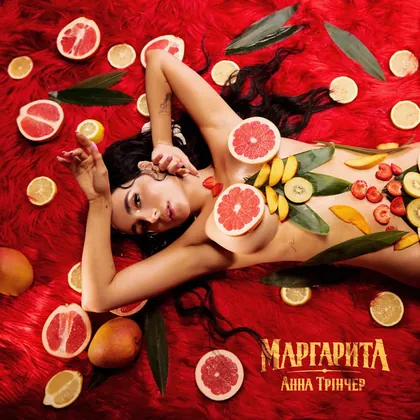
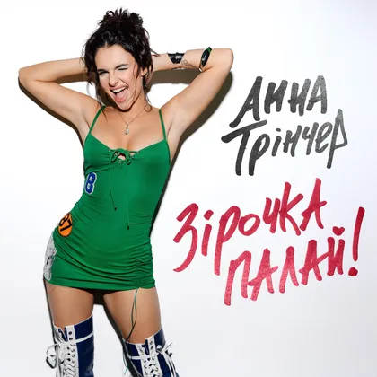
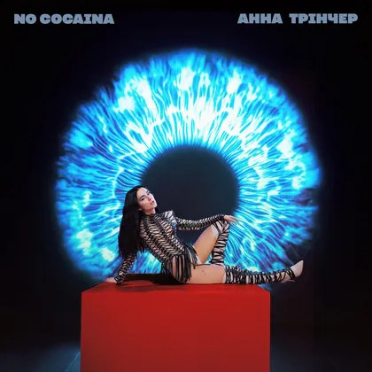
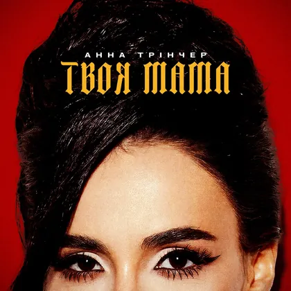

2023
Колоски

Маргарита
Новий реліз
Найновіший трек Анни Трінчер, представлений 15 липня 2026 року та доступний на офіційних музичних платформах.
Посилання відкриються на офіційних платформах.
Дискографія
2023
Колоски
2023
Очі
2024
Бар за баром
2024
Треш

2025
Зірочка палай
2025
Півонії

2025
No cocaina
2025
Вином текла

2026
Твоя мама
2026
Маргарита
Кліпи
Історія

2015
Анна Трінчер представляла Україну на пісенному конкурсі Дитяче Євробачення.

Талант-шоу
Анна брала участь у проєкті «Голос. Діти», а згодом дійшла до суперфіналу шоу «Голос країни».

Екран
Анна Трінчер знялася в однієї з головних ролей серіалу «Школа».
Зараз
Анна активно випускає музику: серед останніх релізів — «Маргарита», представлена 15 липня 2026 року.
Візуальні епохи
Контакти
Концерти й реклама — напряму за номерами з офіційного біо Анни. З інших питань пишіть у соцмережі нижче.
Концерти
Ромен — 068 274 95 67
Реклама
Ірен — +38 098 721 89 37